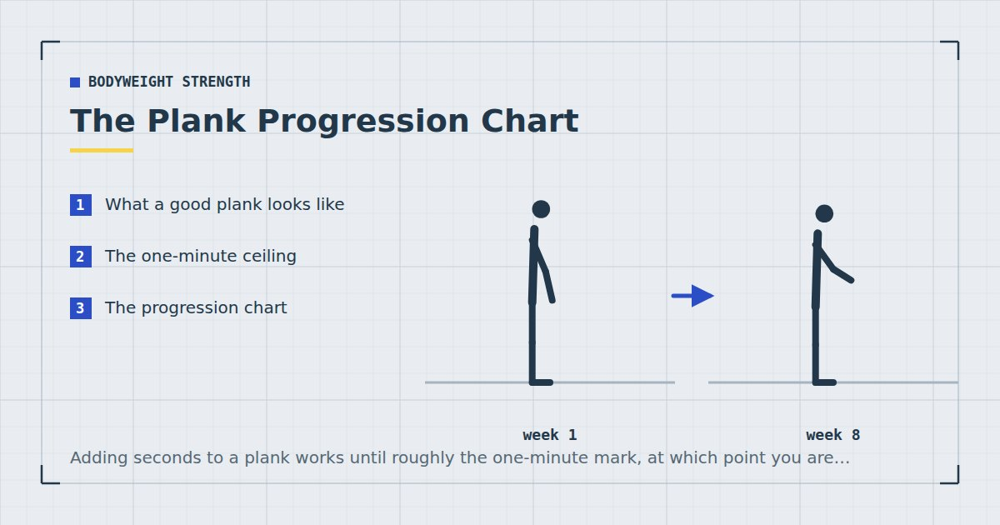

Bodyweight Strength
The Plank Progression Chart: Beginner to Five Minutes
Adding seconds to a plank works until roughly the one-minute mark, at which point you are training patience rather than your trunk. Here is what to do instead.

The plank is the most performed core exercise in home training and the one most commonly done for far too long. Somewhere along the line, holding a plank for a long time became the goal, and that framing quietly turns a good exercise into a bad one.
This is what a good plank looks like, why time stops being a useful progression around the one-minute mark, and a nine-stage chart for what to do instead.
What a good plank looks like
Forearms on the floor, elbows directly under the shoulders, feet hip-width or slightly wider. Body in one straight line from ear to ankle.
The part almost everyone omits: actively squeeze. Glutes contracted hard, abdominals braced as though about to be poked in the stomach, and a slight posterior tilt of the pelvis so the lower back is flat rather than arched. Push the floor away with your forearms so the upper back is slightly rounded rather than sagging between the shoulder blades.
A plank done this way is considerably harder than the version most people hold, and thirty seconds of it is a real set. If you can chat comfortably through a two-minute plank, you are resting on your skeleton rather than working your muscles.
The one-minute ceiling
Once you can hold a genuinely good plank for about sixty seconds, adding time stops being a useful progression for two reasons.
The stimulus changes. Long isometric holds train endurance in a fairly specific way, and the marginal value of second one hundred and twenty over second sixty is very small. You are increasingly training your tolerance for discomfort.
Form degrades before the muscles fail. Most people's position starts breaking down well before their trunk gives out, so the extra time is spent practising a worse version of the exercise.
The general principle applies here as elsewhere in bodyweight training: when an exercise stops being hard, make it harder rather than longer. Evidence comparing light and heavy loads found comparable adaptation when sets are taken close to failure,1 and a plank you can hold for three minutes is nowhere near failure at the thirty-second mark.
The progression chart
| Stage | Variation | Graduate at |
|---|---|---|
| 1 | Wall or counter plank | 3 × 45s |
| 2 | Knee plank | 3 × 45s |
| 3 | Full forearm plank | 3 × 60s |
| 4 | Plank with shoulder taps | 3 × 20 taps |
| 5 | Plank with leg lift | 3 × 10 each side |
| 6 | Long-lever plank (elbows forward) | 3 × 30s |
| 7 | Plank with arm reach | 3 × 10 each side |
| 8 | Feet-elevated plank | 3 × 45s |
| 9 | RKC-style maximal-tension plank | 3 × 20s |
Stages 1 to 3: building the position
Stage 1 — Wall or counter plank. Forearms against a wall or on a kitchen counter, body angled. Same position, much less load. The place to start if a floor plank causes your hips to sag immediately.
Stage 2 — Knee plank. Forearms and knees on the floor, thighs and torso in one line. Note that the line still matters: dropping the hips here defeats the purpose.
Stage 3 — Full forearm plank. The standard version. Build to three sets of sixty seconds and then stop adding time permanently. Everything after this point is about difficulty, not duration.
Stages 4 to 6: harder, not longer
Stage 4 — Shoulder taps. From a high plank with wide feet, tap the opposite shoulder. The point is to prevent hip rotation, which introduces the anti-rotation demand a static plank does not train. Slow taps with still hips beat fast taps with a swinging pelvis.
Stage 5 — Leg lift. Lift one foot a few inches and hold for two seconds. Removing a point of contact substantially increases the demand.
Stage 6 — Long-lever plank. Walk your elbows forward so they are ahead of your shoulders rather than underneath them. This lengthens the lever and is a much bigger jump in difficulty than it looks — expect your time to fall by half or more.
Stages 7 to 9: advanced variations
Stage 7 — Arm reach. Extend one arm straight forward and hold. Combines the long lever with a reduced base of support.
Stage 8 — Feet elevated. Feet on a chair or sofa. Shifts more bodyweight forward onto the arms and increases the anti-extension demand.
Stage 9 — Maximal-tension plank. A short hold with everything contracted as hard as possible — glutes, quads, abdominals, lats, fists clenched, elbows pulling toward your toes as though trying to drag them along the floor. Twenty seconds of this is genuinely difficult and is the point at which the plank becomes a strength exercise rather than an endurance one.
If you can hold it for two minutes, you have not built an impressive core. You have found a comfortable position.
Programming it
Two or three sets, two or three times a week, at the end of a session. Core work goes last because a fatigued trunk compromises everything else — the ordering logic is in how to structure a home workout.
Rest sixty seconds between sets. Planks are more fatiguing than their reputation suggests, particularly from stage six onward.
A plank on its own is not a complete core programme. It trains anti-extension well and the other trunk functions barely at all, so pair it with anti-rotation and anti-lateral-flexion work — the four categories are set out in core training without sit-ups.
Common mistakes
Hips too high. Piking upward makes the plank considerably easier and is the most common unconscious cheat. If you can hold it for three minutes, check this first.
Hips sagging. The opposite error, and the one that loads the lower back. Squeeze the glutes; most people cannot sag with fully contracted glutes.
Holding your breath. Breathe shallowly but continuously. If you have to hold your breath to maintain the position, the variation is too hard.
Chasing a personal best. A five-minute plank is a party trick rather than a training outcome. Three sets of thirty seconds at stage seven builds more than one set of five minutes at stage three.
Where to go next
For a complete trunk programme covering all four functions, see core training without sit-ups. For where it fits in a week, use the three-day split.
Frequently asked questions
How long should I hold a plank?
Twenty to sixty seconds with genuinely good position. Once you can hold a good forearm plank for about a minute, stop adding time and move to a harder variation instead — beyond that point you are mostly training tolerance for discomfort.
Is a 5-minute plank impressive?
It is more a demonstration of pacing and position than of trunk strength. Most long planks involve subtle cheats such as piking the hips, and the marginal training value of the fourth and fifth minutes is very small.
How do I make a plank harder without holding it longer?
Add shoulder taps to introduce an anti-rotation demand, lift one foot to remove a contact point, walk the elbows forward to lengthen the lever, elevate the feet, or hold a short plank with maximal whole-body tension.
Why do my hips sag during a plank?
Usually because the variation is too hard, so the trunk gives way. Squeezing the glutes hard prevents most sagging. If the hips still drop, drop to a knee plank or a counter plank rather than continuing.
How often should I do planks?
Two or three times a week, two or three sets each, at the end of a session. Planks are more fatiguing than their reputation suggests, particularly the harder variations.
Sources and further reading
- Schoenfeld BJ, Grgic J, Ogborn D, Krieger JW. “Strength and Hypertrophy Adaptations Between Low- vs. High-Load Resistance Training: A Systematic Review and Meta-analysis.” Journal of Strength and Conditioning Research, 2017;31(12):3508–3523. PubMed.
- Vieira AF, Umpierre D, Teodoro JL, et al. “Effects of Resistance Training Performed to Failure or Not to Failure on Muscle Strength, Hypertrophy, and Power Output: A Systematic Review With Meta-Analysis.” Journal of Strength and Conditioning Research, 2021. PubMed.
- NHS. Strength and Flex exercise plan.
- MedlinePlus, U.S. National Library of Medicine. Exercise and Physical Fitness.
Comments
Comments are not enabled yet. Add a hosted comment embed (Disqus, Commento, Giscus) inside this container when you are ready.